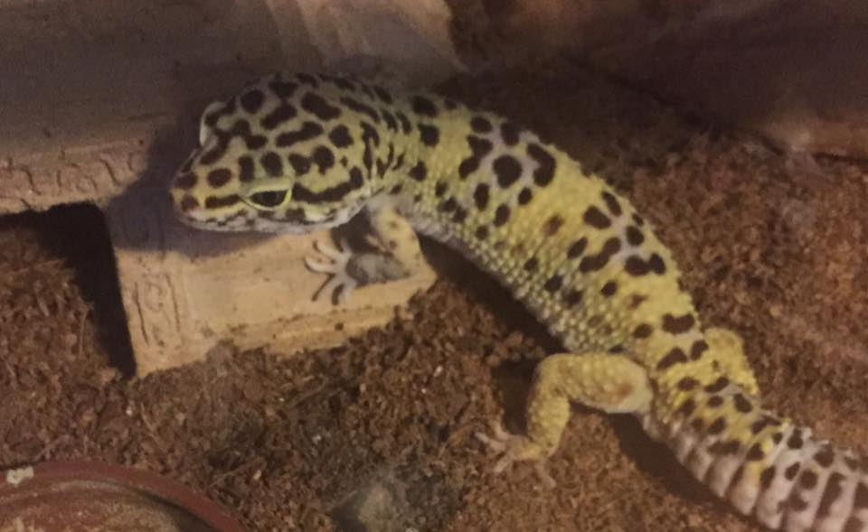

Hey, I'm Kristan Mentor. I've been working on this site for my business media course.
This site is a digital portfolio for a friend of mine, his name is Devin! You can check out his instagram by clicking on the insta symbol, located on the navigation bar.
I'm a tried and true computer science major, so I'm obligated to tell you that I enjoy programming and software development. Wanna check me out on linkedin? here!

I own a leopard gecko named Jojo! He's a cool, cold blooded, dude. Click on his picture if you want to learn more about leopard geckos!
- 
I also enjoy making pixel art from time to time. Here's one I've done of 21 savage: